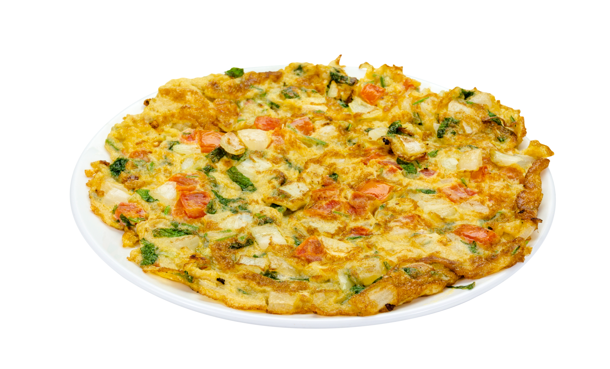

Мой рецепт

Омлет классический
Яйца выпустить в миску. Влить в яйца молоко. Добавить муку и соль. По
желанию можно добавить щепотку сахара, но я предпочитаю без него.
Тщательно взбить смесь венчиком или просто вилкой до однородности. Влить
яичную смесь на разогретую с растительным маслом сковороду. Накрыть
сковороду крышкой. Выпекать омлет на сковороде минут 10-15 на небольшом
огне до готовности. Омлет должен подняться и пропечься. По желанию омлет
можно перевернуть и обжарить с другой стороны.
Ингредиенты
-
Яйцо куриное - 5 шт.
-
Молоко - 100 мл
-
Мука пшеничная - 0,5 ст.л.
-
Соль - 0,5 ч.л.
-
Масло растительное - 2 ст.л.
Видеоверсия
Другие рецепты